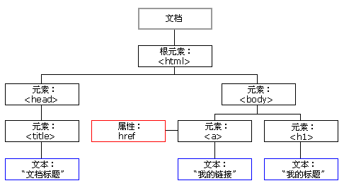

当页面加载时，浏览器创建页面的文档对象模型（Document Object Model）
DOM树：

通过这个对象模型，js能动态操作html：
- JavaScript 能改变页面中的所有 HTML 元素
- JavaScript 能改变页面中的所有 HTML 属性
- JavaScript 能改变页面中的所有 CSS 样式
- JavaScript 能删除已有的 HTML 元素和属性
- JavaScript 能添加新的 HTML 元素和属性
- JavaScript 能对页面中所有已有的 HTML 事件作出反应
- JavaScript 能在页面中创建新的 HTML 事件